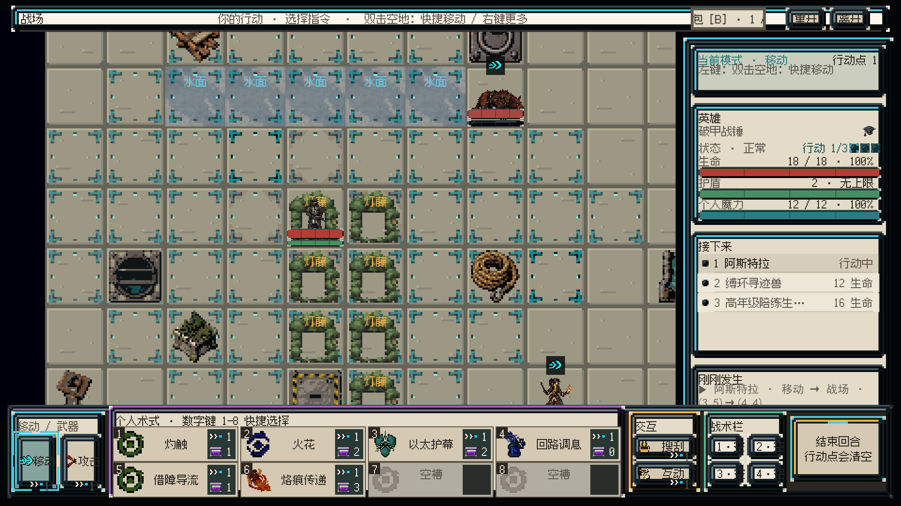

从现有画面定位问题
点击标记查看证据与改法。这张图来自 2026-09-04 归档，保留原图，没有做“优化后”的滤镜伪装。

先读人和路线，再读材质
依据已冻结坐标绘制的语义示意图。点击格子可查看规则与审查重点；图形只表达层次，不是像素美术效果图。上方为第 9 行，右方为 L 列。
浅水中空灯藤轻掩体重物块主 / 兽 / 火 = 三个单位身份
火矢：看见起点、命中与结果
拖动时间轴检查四个表现阶段。示例为对无护盾主角结算 5 火焰伤害并燃烧 2 回合，展示顺序建议总长 480ms；这是教学示意，没有运行游戏规则。
起手
投射
命中
状态
高年级陪练生 · 火矢以太导能，抬手对准。
主角（示意状态）等待视觉接触。
领域结算先产生真实结果；动画只读取它。序列关闭或跳过仍须保留数值、燃烧图标和日志，不能重新扣费或重新命中。烧藤是另一类目标，不应播放角色受伤或爆炸范围。
一个样板，六个顺序阶段
点击阶段查看交付与放行条件。粗估合计 11.5–19.5 有效工作日，另加人工审核等待与超出范围的美术返修；第一轮实际耗时后重新校准。
完成的依据
清楚
默认看见全场；灰阶能区分单位、地形与焦点；中文长名称不入框，不用 BestFit。
可信
每个反馈对应真实命令与结算；动画关闭也能理解结果；搜索内部目标不泄露。
可复用
两项 v3 重新审核；独立原料、五类证据、人工审美和运行时接触各自留档。
本次只完成调查与提案，未生成图片、未更换 Unity 资产、未进入 Play Mode。性能、三条路线通关和新倍率均待后续实机验证。